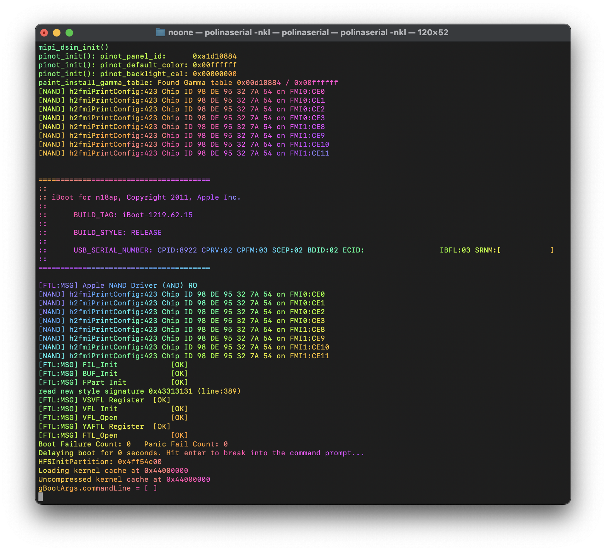
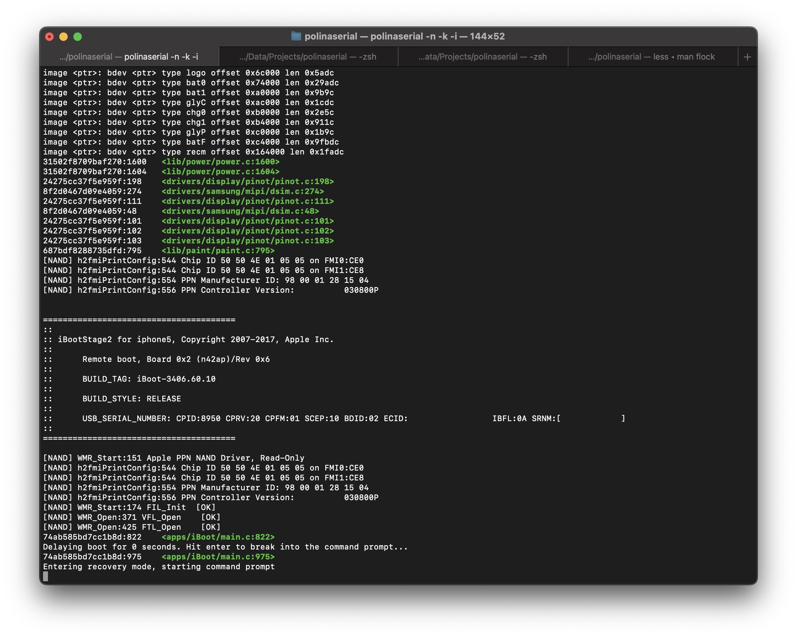
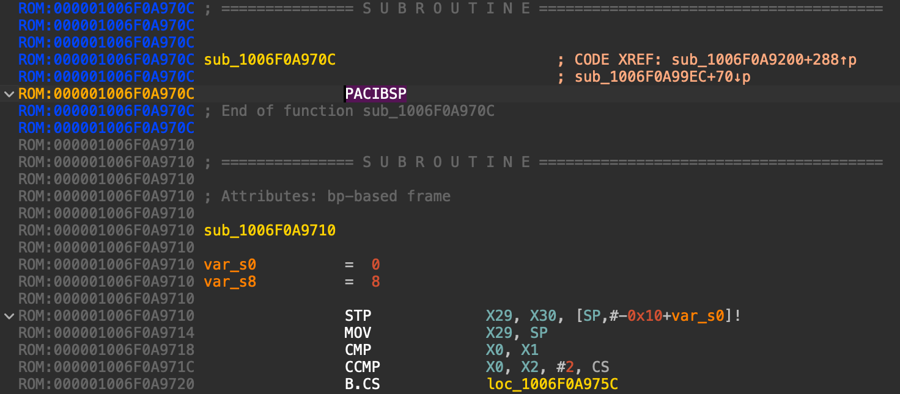

iBoot log (de)obfuscation
Created on 27.10.25
Back in the good old days, and also slightly after, iBoot printed pretty verbose logs into UART and USB recovery mode console:

Then in iOS 9, things changed:

Instead of good strings that actually meant something, we got a lot of random hex-digits. And in those few strings that were spared, "security-sensitive" information (such as pointers) is censored:
898c9b8847addcc7:252
loaded ramdisk at <ptr> of size 0x1799000, from image at <ptr>
898c9b8847addcc7:252
loaded device tree at <ptr> of size 0x100000, from image at <ptr>
898c9b8847addcc7:252
898c9b8847addcc7:252
Attempting to validate kernelcache @ <ptr>
14fdbf61484fe311:322
DEVELOPMENT and DEBUG iBoots still got all the strings, though
What they are
Luckily for us, back in 2018 some honorable men leaked iOS 9 iBoot source code to general public. According to the code, log strings in RELEASE iBoots are replaced by a hash of a filename (+ line number) where the corresponding printf() call is located
It was easy then to apply the hashing algorithm (SHA1 HMAC with "obfuscation of filename for release build logging" string as start value) against the entire source tree and get hash => filename map
At some point I even wrote a serial port monitor program that dynamically detects obfuscated iBoot logs and appends corresponding filename to lines:

Unfortunately, shortly after the leak Apple changed either the hashing algorithm or at least the start value. Because of this, the program became useless against late iOS 11 builds and all the newer ones
A few months ago I decided to try to recover the new hash => filename mappings (or at least some of them) to aid playing with newer iBoots
I found 2 methods that allowed me to recover 500+ new mappings
Method #1 - diffing
@binaryboy did find which exact build changed the hashing algorithm - it was iOS 11.3 beta 4
My idea was "if it's just another beta build, then it's unlikely that they changed a lot of logic compared to iOS 11.3 beta 3, right? And then it's easy to diff?". To answer the questions, let's compare build tags first of all:
iBoot-4076.50.123 - beta 3
iBoot-4076.50.126 - beta 4
Just 3 minor(-est) versions apart! Deeper inspection with IDA showed that the only thing that actually changed in between is the hashes
The diff strategy is surely viable then! I can get a new hash => old hash => filename map, which could be then simplified to new hash => filename - exactly what we want!
Obviously, I wanted to diff everything automatically - iBoot is quite a large binary and each device model has its' own build configuration
Luckily, the images are so similar, that instructions that load the hashes (4 MOVKs with shift) are on the same offset in both versions
I downloaded all possible pairs of iOS 11.3 beta 3 & 4 iBoots, decrypted them and wrote a dumb Python script with Capstone library to diff those. Here is an excerpt of a report from the script:
loading pre-generated file names
total 1930 file names
warning - insn mismatch @ 0x1010!
[iBoot.n69u.RELEASE.bin] matches - 84 (92.31%), nonmatched - 7
...
printing matched results:
0x0b4ebe6fdc23a646 => arch/arm64/mmu.c
0x0cb5568870038567 => arch/arm64/task.c
...
TOTAL matches - 206 (77.15%), TOTAL nonmatched - 61
printing never stolen HMACs:
0xf3a8c8baccd77a48 => sys/supervisor.c
0x61b63fde3148defe => drivers/apple/mailbox/mailbox64.c
...
TOTAL never stolen HMACs - 48
written 254 matched HMACs to hmacs/betas.txt
Pretty good yield! However, iOS 11 is very old at this point, and this method cannot give us new files that weren't there back then
Side note #1
You could notice "never stolen HMACs" in the report excerpt above. What's that? The thing is they obviously added some new files between iOS 9 and 11.3, so I gathered all relevant DEVELOPMENT/DEBUG iBoots that I got from various leaks, prototype dumps, etc. (~700 images total) and extracted filenames from those (they are printed upon assertion fails)
Then I generated their HMACs as per the old algorithm from the stolen source, so I could match them, too. The "never stolen HMACs" are the ones hashed with the old algo
Method #2 - assertions
As I already mentioned, iBoot has assert()-like invocations across its' codebase, and there are quite a lot of them. When condition of an assertion is not met, they print a scary message and panic
The scary message contains what? Correct! A filename where the assertion in question is located
The absolute most of assert()'s are only compiled into DEVELOPMENT/DEBUG iBoot, but at some point they started to include quite some amount of those into RELEASE
Now here is the 1 million dollar question - what does RELEASE iBoot print upon a failed assertion? A hash!
Long story short, the strategy here is the following:
-
Find all functions that do assertions in DEVELOPMENT/DEBUG iBoot
- Dead easy to do - find all strings that look like a path (e.g. drivers/apple/mailbox/mailbox64.c) and code XREFs to them
-
Find all functions that print a hash in RELEASE counterpart
- Also nothing complex - look for all MOV instructions with a large immediate with high entropy as second operand
-
Diff all the functions from 2 images against each other so we can map a function from DEVELOPMENT/DEBUG iBoot to the same one in RELEASE
- Not manually with Capstone anymore, but with something like BinDiff
- Obviously, there is gonna be a lot of false positives, but if we filter out matches with low similarity rates...
-
From such map we can then derive a map of hash => filename that we want
- Also needs checks for possible collisions (which are obvious signs of mistakes)
Ratio of amount of asserts in RELEASE iBoot vs. DEVELOPMENT/DEBUG looks pretty sad - 1 to 10. In absolute values it's around 50-90 in RELEASE and up to ~1000 in DEVELOPMENT/DEBUG
But! Even though RELEASE version of a function might have no assert, it still might print something. Such print will then turn into a hash. Meaning we still can consider such function for diffing
Sourcing images
DEVELOPMENT and DEBUG iBoots are obviously not released by Apple. I, however, posses a large collection of leaked DEVELOPMENT (and sometimes DEBUG) bootloaders that I also got a direct RELEASE counterpart for - they are compiled from the exact same source, which I consider very good for the actual binary diffing
I also had a lot more good iBoots from various leaks, prototype dumps and Horizon bundles (hardware calibration firmware for repairs). Total amount of images in my diffing dataset is almost 1 thousand
IDA considerations
iBoot is shipped raw without Mach-O container. So definetely no symbols, and no segmentation info, even. IDA tends to mess up analysis of such raw binaries in many different ways, but the most frustraiting one is the PACIBSP problem

PACIBSP instruction is the most obvious and 100% reliable way to tell that a function starts here, but still IDA manages to mess it up. All because of an embedded plugin that uses patterns taken from Ghidra (?!) to detect function bounds. This does sound like a sick joke, indeed, but unfortunately
I'm not joking
Luckily, the plugin can be disabled
After that we can turn PAC into our strongest ally and detect function bounds properly with a bit of IDAPython code
Among other notable issues, missing noreturn flag on panic() creates a lot of problems with function bounds as well, so I find the function and rename it (IDA is smart enough to put the noreturn flag automatically)
Diffing considerations
There is no need to diff everything, just the functions that print something (for RELEASE iBoot) and that have assertions (DEVELOPMENT/DEBUG). Good for performance
The yield
[00:38:43] printing pairs:
[00:38:43] PAIR: 001bb168ceece8dd => platform/t8120/tunables/t8120/auto/af_io0lwmuxpipe.c
[00:38:43] PAIR: 0033ab8aa11b2bf5 => lib/fs/microkernel/fs.c
[00:38:43] PAIR: 003e05f42fd06461 => platform/t8110/tunables/t8112/auto/af_rt1lwmuxpipe.c
[00:38:43] PAIR: 0044792db82801d1 => drivers/usb/usb_dfu.c
...
[00:38:43] total HMACs in iBoots - 1189, total HMACs matched - 390, rate - 32.80%
[00:38:43] average match rate - 9.10%
[00:38:43] no errors, saving...
[00:38:43] DONE!
390 good mappings for my dataset and my implementation this far. Some of those also match mappings from the method #1, so the total yield is 586 mappings (or how they used to say in Intel - Pentium)
Not a bad result I guess, especially considereing this even includes the files added in recent iBoot versions
The entire process takes around 40 minutes on my M4 Mac mini, which I also consider a good result
Room for improvements?
The method #1 is pretty complete, I believe. The only thing I plan to do is to find relevant Apple T2 iBoots and run the same script against them, too
However, the method #2 could work out even better with better binary diffing heuristics
- Missing assert() in RELEASE iBoot can dramatically reduce function similarity in eyes of BinDiff/Diaphora/etc. if the function in question is small enough
- Function outlining doesn't make any good either
- Might be a good idea to create iBoot-specific heuristics (breadcrumbs, profiling or 🔥🌸 type metadata?)
polinaserial
I published the tool that detects the hashes in serial stream automatically and prints matched filename (if it can). It already contains the mappings from the stolen source and the beta diff. The assert diff as well, but that's loaded separately, since I have less confidence in those
It has a lot of other cool features, too
Free & open source, available on my
GitHub (macOS and iOS only)
Post Scriptum
One funny thing that I noticed while doing all this is that hashes produced by the new algorithm never have the top nibble set, e.g. 0x0b4ebe6fdc23a646. It wasn't the case for the old algorithm
Could it mean that the new algo has some kind of cryptographic weakness? Or new script that computes them just cuts the top character off by mistake and nobody in Apple ever noticed it?
Credits
- @binaryboy - for previous research on the topic
- @siguza - for providing me with a lot of firmwares